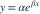
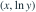

数据 x=(4.1,23.0,84.8,120.2)，y=(13.0,9.0,2.5,1.3)。将模型

对数化，对
做普通最小二乘。所估 α 与 β 的乘积约为？- A−0.02
- B−0.28
- C−0.16
- D−0.05
我已思考，展开答案与解析
正确答案：B
- 对数线性拟合得斜率约 −0.02001、截距约2.646，故 ，乘积约−0.280。
易错提醒先明确分布参数、独立性和统计量的定义，再进行计算。
资料校订：明确是在对数尺度做最小二乘；它一般不同于原始 y 尺度上的非线性最小二乘。
用户提供练手卷 · 原第 43 题；题目 PDF 第 8 页
单选改编；题干与选项已重新编排